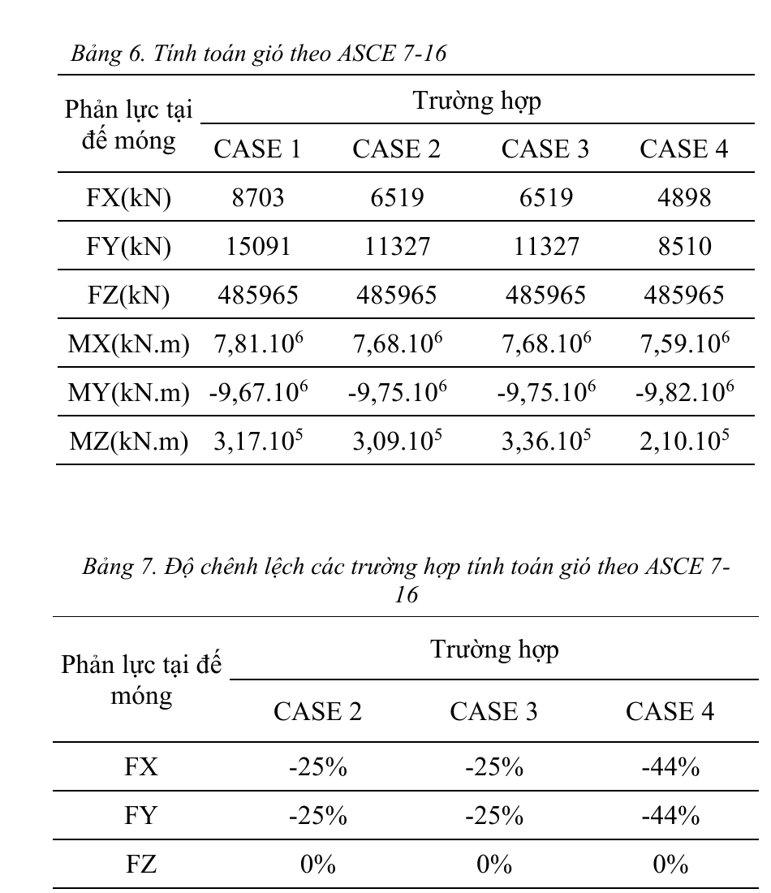

01 2024–2025 · Student Research Conference Paper & Technical Study Wind Loads — TCVN 2737:2023 vs ASCE 7-16 A 20-storey reinforced-concrete building · standard calculation, ETABS modelling, and base-reaction comparison

How can wind loading for a multi-storey building be calculated under TCVN 2737:2023, and what changes when the four ASCE 7-16 loading cases — including torsional effects — are considered?
Authors: Nguyen Thanh Hau, Le Van Cuong, Nguyen Ngoc Han, and Le Nguyen Khanh Trinh.
Supervisor: Dr. Tran Thanh Binh.
Contributed to the wind-load calculation workflow, development and checking of the Excel calculation workbook, ETABS modelling and result extraction, and preparation of comparison tables and research material.
- Worked through the TCVN 2737:2023 procedure for standard wind pressure, height coefficient k(ze), gust-effect factor, and aerodynamic coefficients.
- Applied the workflow to a 20-storey, 72 m building with 3.6 m storeys.
- Used ETABS to evaluate four ASCE 7-16 wind-action cases and compared base forces and moments.
- Relative to Case 1, Cases 2 and 3 reduced both horizontal base reactions by 25%; Case 4 reduced them by 44%.
- The torsional base moment changed by −2%, +6%, and −34% in Cases 2, 3, and 4, respectively.
- The paper recommends considering ASCE Case 3 to account for torsional action that is not represented by separate-direction loading alone.
- ETABS
- Microsoft Excel
- TCVN 2737:2023
- ASCE 7-16
- Student Research Conference Paper
- Technical Calculation Note
- Calculation Workbook
- ETABS Comparison Results